- Generated by
 1.9.1
1.9.1
|
ERF
Energy Research and Forecasting: An Atmospheric Modeling Code
|
Classes | |
| struct | StagedBuffer |
| struct | ActuatorDeviceBuffers |
| struct | ZBounds |
| class | LevelHeights |
| struct | ColumnCells |
| struct | CoverageGrids |
| class | RunningStats |
| class | WakeLines |
Enumerations | |
| enum class | CoverZ { Reach , Footprint , Column } |
Functions | |
| template<class V > | |
| void | grow_buffer (V &v, std::size_t n) |
| AMREX_GPU_HOST_DEVICE AMREX_FORCE_INLINE amrex::Real | face_height (int dir, int i, int j, int k, amrex::Array4< amrex::Real const > const &znd, bool has_znd, amrex::Real zlo, amrex::Real dz) |
| AMREX_GPU_HOST_DEVICE AMREX_FORCE_INLINE amrex::Real | face_volume (int dir, int i, int j, int k, amrex::Array4< amrex::Real const > const &detj, bool has_detj, amrex::Real dxdydz) |
| void | check_same_points_everywhere (int npts, const char *who) |
| Abort, naming who, unless every rank passes the same number of points (one collective). More... | |
| std::vector< Real > | wrap_periodic (const std::vector< Real > &pos, const Geometry &geom) |
| void | sample_velocity_local (const MultiFab &U, const MultiFab &V, const MultiFab &W, const MultiFab *z_phys_nd, const Geometry &geom, const std::vector< Real > &wpos, std::vector< Real > &vel, std::vector< int > &cnt, ActuatorDeviceBuffers *buffers) |
| void | sample_velocity (const MultiFab &U, const MultiFab &V, const MultiFab &W, const MultiFab *z_phys_nd, const Geometry &geom, const std::vector< Real > &pos, std::vector< Real > &vel) |
| void | sample_cell_scalar (const MultiFab &mf, int comp, const MultiFab *z_phys_nd, const Geometry &geom, const std::vector< Real > &pos, std::vector< Real > &val) |
| void | terrain_heights (const MultiFab *z_phys_nd, const Geometry &geom, const std::vector< Real > &pos, std::vector< Real > &h) |
| ZBounds | mesh_z_bounds (const MultiFab &z_phys_nd, const Geometry &geom, bool over_all_ranks) |
| ZBounds | mesh_z_levels (const MultiFab &z_phys_nd, const Geometry &geom) |
| void | column_cell_ranges (const MultiFab &z_phys_nd, const Geometry &geom, const std::vector< Real > &pos, const std::vector< Real > &reach, ColumnCells &cells) |
| bool | points_covered_by (const BoxArray &ba, const Geometry &geom, const std::vector< Real > &pos, Real reach, std::string &first_outside, CoverZ z, const ZBounds *zb, const ColumnCells *cells) |
| bool | points_covered_by (const CoverageGrids &grids, const Geometry &geom, const std::vector< Real > &pos, Real reach, std::string &first_outside, CoverZ z, const ZBounds *zb, const ColumnCells *cells) |
| bool | region_touches_grids (const BoxArray &ba, const Geometry &geom, const RealBox ®ion, const ZBounds *zb) |
| void | sample_velocity (const amrex::MultiFab &U, const amrex::MultiFab &V, const amrex::MultiFab &W, const amrex::MultiFab *z_phys_nd, const amrex::Geometry &geom, const std::vector< amrex::Real > &pos, std::vector< amrex::Real > &vel) |
| void | sample_velocity_local (const amrex::MultiFab &U, const amrex::MultiFab &V, const amrex::MultiFab &W, const amrex::MultiFab *z_phys_nd, const amrex::Geometry &geom, const std::vector< amrex::Real > &wpos, std::vector< amrex::Real > &vel, std::vector< int > &cnt, ActuatorDeviceBuffers *buffers=nullptr) |
| std::vector< amrex::Real > | wrap_periodic (const std::vector< amrex::Real > &pos, const amrex::Geometry &geom) |
| void | sample_cell_scalar (const amrex::MultiFab &mf, int comp, const amrex::MultiFab *z_phys_nd, const amrex::Geometry &geom, const std::vector< amrex::Real > &pos, std::vector< amrex::Real > &val) |
| void | terrain_heights (const amrex::MultiFab *z_phys_nd, const amrex::Geometry &geom, const std::vector< amrex::Real > &pos, std::vector< amrex::Real > &h) |
| ZBounds | mesh_z_bounds (const amrex::MultiFab &z_phys_nd, const amrex::Geometry &geom, bool over_all_ranks=true) |
| ZBounds | mesh_z_levels (const amrex::MultiFab &z_phys_nd, const amrex::Geometry &geom) |
| void | column_cell_ranges (const amrex::MultiFab &z_phys_nd, const amrex::Geometry &geom, const std::vector< amrex::Real > &pos, const std::vector< amrex::Real > &reach, ColumnCells &cells) |
| bool | points_covered_by (const amrex::BoxArray &ba, const amrex::Geometry &geom, const std::vector< amrex::Real > &pos, amrex::Real reach, std::string &first_outside, CoverZ z=CoverZ::Reach, const ZBounds *zb=nullptr, const ColumnCells *cells=nullptr) |
| bool | points_covered_by (const CoverageGrids &grids, const amrex::Geometry &geom, const std::vector< amrex::Real > &pos, amrex::Real reach, std::string &first_outside, CoverZ z=CoverZ::Reach, const ZBounds *zb=nullptr, const ColumnCells *cells=nullptr) |
| bool | region_touches_grids (const amrex::BoxArray &ba, const amrex::Geometry &geom, const amrex::RealBox ®ion, const ZBounds *zb=nullptr) |
| void | spread_forces (const std::vector< Real > &pos, const std::vector< Real > &force, Real epsilon, const MultiFab *z_phys_nd, const MultiFab *detJ_cc, const Geometry &geom, MultiFab &src_x, MultiFab &src_y, MultiFab &src_z) |
| std::string | spread_points_problem (const std::vector< Real > &pos, const std::vector< Real > &force, const std::vector< Real > &epsilon) |
| void | check_spread_points (const std::vector< Real > &pos, const std::vector< Real > &force, const std::vector< Real > &epsilon) |
| void | check_spread_layout (const MultiFab *z_phys_nd, const MultiFab *detJ_cc, const MultiFab &src_x, const MultiFab &src_y, const MultiFab &src_z) |
| void | spread_partial_norms (const std::vector< Real > &pos, const std::vector< Real > &epsilon, const MultiFab *z_phys_nd, const MultiFab *detJ_cc, const Geometry &geom, const MultiFab &src_x, std::vector< Real > &norm, const ZBounds *zb_local, ActuatorDeviceBuffers *buffers) |
| void | add_scaled_kernels (const std::vector< Real > &pos, const std::vector< Real > &f_over_s, const std::vector< Real > &epsilon, const MultiFab *z_phys_nd, const MultiFab *detJ_cc, const Geometry &geom, MultiFab &src_x, MultiFab &src_y, MultiFab &src_z, const ZBounds *zb_local, ActuatorDeviceBuffers *buffers) |
| void | add_spread_forces (const std::vector< Real > &pos, const std::vector< Real > &force, const std::vector< Real > &epsilon, const MultiFab *z_phys_nd, const MultiFab *detJ_cc, const Geometry &geom, MultiFab &src_x, MultiFab &src_y, MultiFab &src_z) |
| void | spread_forces (const std::vector< Real > &pos, const std::vector< Real > &force, const std::vector< Real > &epsilon, const MultiFab *z_phys_nd, const MultiFab *detJ_cc, const Geometry &geom, MultiFab &src_x, MultiFab &src_y, MultiFab &src_z) |
| Real | integrate_source (int dir, const MultiFab &src, const MultiFab *detJ_cc, const Geometry &geom) |
| void | spread_forces (const std::vector< amrex::Real > &pos, const std::vector< amrex::Real > &force, const std::vector< amrex::Real > &epsilon, const amrex::MultiFab *z_phys_nd, const amrex::MultiFab *detJ_cc, const amrex::Geometry &geom, amrex::MultiFab &src_x, amrex::MultiFab &src_y, amrex::MultiFab &src_z) |
| void | add_spread_forces (const std::vector< amrex::Real > &pos, const std::vector< amrex::Real > &force, const std::vector< amrex::Real > &epsilon, const amrex::MultiFab *z_phys_nd, const amrex::MultiFab *detJ_cc, const amrex::Geometry &geom, amrex::MultiFab &src_x, amrex::MultiFab &src_y, amrex::MultiFab &src_z) |
| void | spread_forces (const std::vector< amrex::Real > &pos, const std::vector< amrex::Real > &force, amrex::Real epsilon, const amrex::MultiFab *z_phys_nd, const amrex::MultiFab *detJ_cc, const amrex::Geometry &geom, amrex::MultiFab &src_x, amrex::MultiFab &src_y, amrex::MultiFab &src_z) |
| void | spread_partial_norms (const std::vector< amrex::Real > &pos, const std::vector< amrex::Real > &epsilon, const amrex::MultiFab *z_phys_nd, const amrex::MultiFab *detJ_cc, const amrex::Geometry &geom, const amrex::MultiFab &src_x, std::vector< amrex::Real > &norm, const ZBounds *zb_local=nullptr, ActuatorDeviceBuffers *buffers=nullptr) |
| void | add_scaled_kernels (const std::vector< amrex::Real > &pos, const std::vector< amrex::Real > &f_over_s, const std::vector< amrex::Real > &epsilon, const amrex::MultiFab *z_phys_nd, const amrex::MultiFab *detJ_cc, const amrex::Geometry &geom, amrex::MultiFab &src_x, amrex::MultiFab &src_y, amrex::MultiFab &src_z, const ZBounds *zb_local=nullptr, ActuatorDeviceBuffers *buffers=nullptr) |
| void | check_spread_layout (const amrex::MultiFab *z_phys_nd, const amrex::MultiFab *detJ_cc, const amrex::MultiFab &src_x, const amrex::MultiFab &src_y, const amrex::MultiFab &src_z) |
| amrex::Real | integrate_source (int dir, const amrex::MultiFab &src, const amrex::MultiFab *detJ_cc, const amrex::Geometry &geom) |
| bool | open_log (std::ofstream &out, const std::string &fname, bool truncate) |
| bool | file_exists_everywhere (const std::string &fname) |
Device memory that the actuator spreading and sampling kernels keep from one call to the next.
Face heights and face volumes of the staggered grid, shared by the actuator sampler and spreader.
Interpolation of the flow and of the terrain height at arbitrary points, and the check that points lie on a level's grids.
Spreading of point forces onto the face-centred momentum sources with a normalised Gaussian kernel, and the integral check.
Opening of the moving-bodies diagnostics files for a fresh or a restarted run.
Running mean, rms, minimum and maximum of a body's scalar diagnostics, carried across checkpoints.
Wake sampling lines behind one rotor and their running time average.
|
strong |
Return whether every point, with the cells within reach metres around it, lies inside the union of boxes of a level (the anchor level's grids): the sampler needs the neighbouring cells and the spreader the kernel's reach, and on a refined level that is not the whole domain. In a periodic direction the needed cells wrap across the seam to the domain's other side; in a non-periodic one they are clamped to the domain. Returns false and names the first point outside in first_outside. On a terrain-following or stretched mesh a point's k is not its height over dz, so z is checked as z says: Reach (the cells within reach of the height over dz, for a flat, uniform mesh), Footprint (the reach across only, at any height: the sampler then finds a point above or below the grids by itself), or Column (for the spreading, whose kernel would otherwise be cut where the grids stop: the reach across over every cell the heights within reach may lie in, over the point's own columns from cells (column_cell_ranges, one range per point), else whatever the column from the mesh's bounds zb (mesh_z_bounds), or over the whole height without either). With cells a point whose range is empty (kb > kt) is not covered. Not with a periodic z.
| Enumerator | |
|---|---|
| Reach | |
| Footprint | |
| Column | |
| void erf_actuator::add_scaled_kernels | ( | const std::vector< amrex::Real > & | pos, |
| const std::vector< amrex::Real > & | f_over_s, | ||
| const std::vector< amrex::Real > & | epsilon, | ||
| const amrex::MultiFab * | z_phys_nd, | ||
| const amrex::MultiFab * | detJ_cc, | ||
| const amrex::Geometry & | geom, | ||
| amrex::MultiFab & | src_x, | ||
| amrex::MultiFab & | src_y, | ||
| amrex::MultiFab & | src_z, | ||
| const ZBounds * | zb_local = nullptr, |
||
| ActuatorDeviceBuffers * | buffers = nullptr |
||
| ) |
The second pass, on this rank's boxes only: add (F_p / S_p) w_p to every face of every box (both copies of a shared face alike), each point with its own width.
The images are binned to tiles of 8^3 faces of each box: one kernel per box and face grid, one thread per face of the tiles some kernel reaches, which adds its terms in point then image order without atomics on the sources (deterministic, and the order of the point-by-point sum). On the host (no GPU; not from inside an OpenMP parallel region) each image instead adds into the faces of its own reach box, in the same image order: every face takes the same terms in the same order, so the sources are bit-identical, without the tile pass's walk over images that miss the face (with the compilers' standard floating-point contraction: with clang's -ffp-contract=fast, icpx's default, the two loops may fuse a kernel's squared distance differently, so the last bits may differ).
| [in] | f_over_s | 3*n forces over their whole normalisations (N/m^3), component fastest; a zero skips the point's component |
| buffers | device memory kept from call to call (the call uses its own when nullptr) |
| void erf_actuator::add_scaled_kernels | ( | const std::vector< Real > & | pos, |
| const std::vector< Real > & | f_over_s, | ||
| const std::vector< Real > & | epsilon, | ||
| const MultiFab * | z_phys_nd, | ||
| const MultiFab * | detJ_cc, | ||
| const Geometry & | geom, | ||
| MultiFab & | src_x, | ||
| MultiFab & | src_y, | ||
| MultiFab & | src_z, | ||
| const ZBounds * | zb_local, | ||
| ActuatorDeviceBuffers * | buffers | ||
| ) |
Referenced by add_spread_forces().
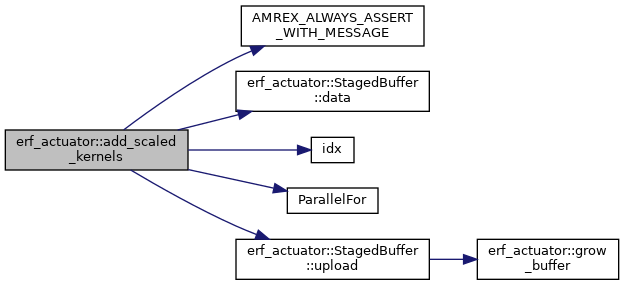
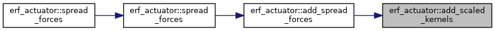
| void erf_actuator::add_spread_forces | ( | const std::vector< amrex::Real > & | pos, |
| const std::vector< amrex::Real > & | force, | ||
| const std::vector< amrex::Real > & | epsilon, | ||
| const amrex::MultiFab * | z_phys_nd, | ||
| const amrex::MultiFab * | detJ_cc, | ||
| const amrex::Geometry & | geom, | ||
| amrex::MultiFab & | src_x, | ||
| amrex::MultiFab & | src_y, | ||
| amrex::MultiFab & | src_z | ||
| ) |
The same, but added to what the sources hold (spread_forces() sets them): for several sets of points spread one after the other. Collective: every rank must pass the same points.
| void erf_actuator::add_spread_forces | ( | const std::vector< Real > & | pos, |
| const std::vector< Real > & | force, | ||
| const std::vector< Real > & | epsilon, | ||
| const MultiFab * | z_phys_nd, | ||
| const MultiFab * | detJ_cc, | ||
| const Geometry & | geom, | ||
| MultiFab & | src_x, | ||
| MultiFab & | src_y, | ||
| MultiFab & | src_z | ||
| ) |
Referenced by spread_forces().
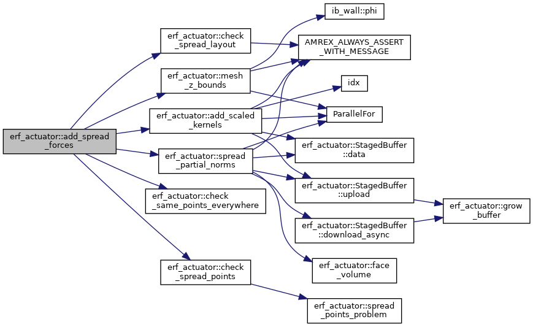
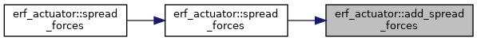
| void erf_actuator::check_same_points_everywhere | ( | int | npts, |
| const char * | who | ||
| ) |
Abort, naming who, unless every rank passes the same number of points (one collective).
Referenced by add_spread_forces(), column_cell_ranges(), sample_cell_scalar(), sample_velocity(), and terrain_heights().
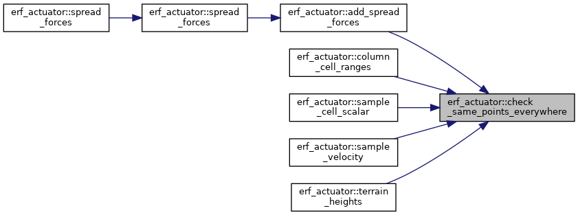
| void erf_actuator::check_spread_layout | ( | const amrex::MultiFab * | z_phys_nd, |
| const amrex::MultiFab * | detJ_cc, | ||
| const amrex::MultiFab & | src_x, | ||
| const amrex::MultiFab & | src_y, | ||
| const amrex::MultiFab & | src_z | ||
| ) |
Abort unless the sources are face-centred in x, y and z and share boxes and distribution with z_phys_nd and detJ_cc (one ghost cell).
| void erf_actuator::check_spread_layout | ( | const MultiFab * | z_phys_nd, |
| const MultiFab * | detJ_cc, | ||
| const MultiFab & | src_x, | ||
| const MultiFab & | src_y, | ||
| const MultiFab & | src_z | ||
| ) |
Referenced by add_spread_forces(), and spread_forces().
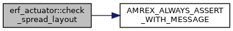
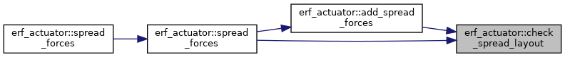
| void erf_actuator::check_spread_points | ( | const std::vector< amrex::Real > & | pos, |
| const std::vector< amrex::Real > & | force, | ||
| const std::vector< amrex::Real > & | epsilon | ||
| ) |
Abort unless the points, forces and widths match in number and are finite, and the widths positive (spread_forces' checks).
Referenced by add_spread_forces(), and spread_forces().
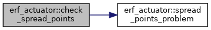
| void erf_actuator::column_cell_ranges | ( | const amrex::MultiFab & | z_phys_nd, |
| const amrex::Geometry & | geom, | ||
| const std::vector< amrex::Real > & | pos, | ||
| const std::vector< amrex::Real > & | reach, | ||
| ColumnCells & | cells | ||
| ) |
The cells a point's heights within reach may lie in, over the point's own columns: for point p (pos[3p .. 3p+2], reach[p] across and in height, in metres), the lowest and highest cell k such that, in some node column the reach across touches (a periodic x or y wrapping across the seam, as points_covered_by takes it), the cell's spacing [z(k), z(k+1)] overlaps [z - reach, z + reach] (to a relative 1e-5, as ZBounds::k_range), from every rank's boxes of z_phys_nd. Where those heights go below a box's lowest node in a column (the box's bottom face, unless it is the domain's floor), the cell under that box counts too, and where they go above a box's highest node (unless it is the domain's top), the cell above it: in a column split in z between boxes those cells are held by the next box, and where the level stops they are not, so a kernel the level cuts fails points_covered_by, whatever the boxes. The range is the hull [min k, max k] over the columns: points_covered_by never accepts a kernel some cell of which the level lacks, and accepts every kernel whose cells the level holds when, over the columns within reach, those cells form one run and no column has the heights below its ground under a box that starts above the floor. Elsewhere it is conservative: it also asks for the cells of a gap between two runs, or the cell under such a box (a cliff next to the point on a level aloft). The coverage answer is the same whatever the boxes; the hull itself may differ by cells the level holds in the same run. A reach partly below the floor or above the domain top needs nothing there, as with the mesh's bounds; one wholly beyond them touches no node and is not covered. kb > kt for a point whose reach touches no node of the level. A collective, the same on every rank: every rank passes the same points.
| [in] | pos | 3*n positions (m) |
| [in] | reach | n reaches (m) |
| [out] | cells | the ranges of the n points |
| void erf_actuator::column_cell_ranges | ( | const MultiFab & | z_phys_nd, |
| const Geometry & | geom, | ||
| const std::vector< Real > & | pos, | ||
| const std::vector< Real > & | reach, | ||
| ColumnCells & | cells | ||
| ) |
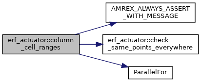
| AMREX_GPU_HOST_DEVICE AMREX_FORCE_INLINE amrex::Real erf_actuator::face_height | ( | int | dir, |
| int | i, | ||
| int | j, | ||
| int | k, | ||
| amrex::Array4< amrex::Real const > const & | znd, | ||
| bool | has_znd, | ||
| amrex::Real | zlo, | ||
| amrex::Real | dz | ||
| ) |
Return the height (m) of the centre of face (i,j,k) of the staggered grid dir (0: x face, 1: y face, 2: z face): the mean of the four mesh nodes of that face on a stretched or terrain-following mesh (znd, has_znd true), or the nominal height on a uniform-dz mesh: zlo + k dz for a z face (z face k is the bottom face of cell k), zlo + (k + 1/2) dz otherwise. Shared by the velocity sampling and the force spreading so that both see the same face positions.
Referenced by sample_cell_scalar(), and sample_velocity_local().
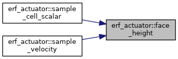
| AMREX_GPU_HOST_DEVICE AMREX_FORCE_INLINE amrex::Real erf_actuator::face_volume | ( | int | dir, |
| int | i, | ||
| int | j, | ||
| int | k, | ||
| amrex::Array4< amrex::Real const > const & | detj, | ||
| bool | has_detj, | ||
| amrex::Real | dxdydz | ||
| ) |
Return the volume (m^3) attached to face (i,j,k) of the staggered grid dir: half of each neighbouring cell, with the cell volumes dx dy dz detJ on a stretched or terrain-following mesh (detJ = 1 otherwise). Reads detj at i-1 (x), j-1 (y) or k-1 (z): detJ needs one ghost cell at a box's low faces.
Referenced by integrate_source(), and spread_partial_norms().
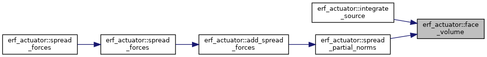
|
inline |
Whether fname exists, as the I/O rank sees it, on every rank: a checkpoint read that every rank enters (ParallelDescriptor::ReadAndBcastFile) must be decided alike everywhere, whatever a parallel file system shows each node.
Referenced by erf_actuator::RunningStats::read_state(), and erf_actuator::WakeLines::read_state().
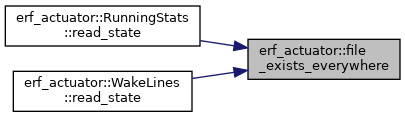
| void erf_actuator::grow_buffer | ( | V & | v, |
| std::size_t | n | ||
| ) |
Grow v to hold at least n values; never shrink it, so that a buffer keeps its largest size.
Referenced by erf_actuator::StagedBuffer< T >::download_async(), and erf_actuator::StagedBuffer< T >::upload().
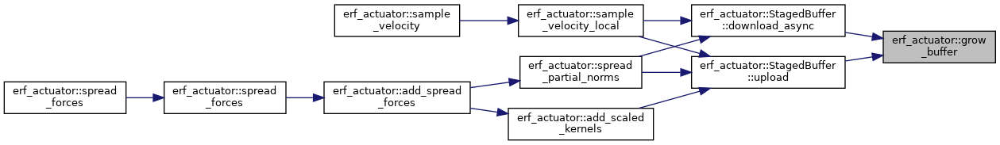
| amrex::Real erf_actuator::integrate_source | ( | int | dir, |
| const amrex::MultiFab & | src, | ||
| const amrex::MultiFab * | detJ_cc, | ||
| const amrex::Geometry & | geom | ||
| ) |
Return the integral of a face-centred source over the mesh, sum of src dV (the total force, N).
| dir | 0, 1 or 2: src holds the x-, y- or z-face component |
| Real erf_actuator::integrate_source | ( | int | dir, |
| const MultiFab & | src, | ||
| const MultiFab * | detJ_cc, | ||
| const Geometry & | geom | ||
| ) |
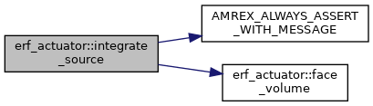
| ZBounds erf_actuator::mesh_z_bounds | ( | const amrex::MultiFab & | z_phys_nd, |
| const amrex::Geometry & | geom, | ||
| bool | over_all_ranks = true |
||
| ) |
The bounds of a terrain-following or stretched level's heights, from its z_phys_nd (nodal, one component): a height Z lies in a cell k with floor((Z - ground_hi) / dz_hi) <= k <= floor((Z - ground_lo) / dz_lo). Over every rank's boxes, the same on every rank (a collective), or with over_all_ranks false over this rank's boxes only, which bounds the cells of those boxes alone. With over_all_ranks false and a box of this rank that does not reach the ground (a column split in z, a level aloft), where that formula does not hold, also the table of the boxes' node heights (ZBounds::has_table). The table is this rank's: points_covered_by takes the global bounds only.
| ZBounds erf_actuator::mesh_z_bounds | ( | const MultiFab & | z_phys_nd, |
| const Geometry & | geom, | ||
| bool | over_all_ranks | ||
| ) |
Referenced by add_spread_forces(), and mesh_z_levels().
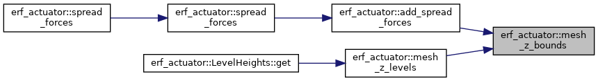
| ZBounds erf_actuator::mesh_z_levels | ( | const amrex::MultiFab & | z_phys_nd, |
| const amrex::Geometry & | geom | ||
| ) |
mesh_z_bounds over every rank's boxes, with the table of the level's node heights over every rank's boxes too (ZBounds::has_table): each node level's lowest and highest height and the cells the level holds, the same on every rank (a collective). ZBounds::k_range then gives the cells of the level a height range may lie in whether or not the boxes reach the ground. For region_touches_grids; points_covered_by takes the bounds without a table.
| ZBounds erf_actuator::mesh_z_levels | ( | const MultiFab & | z_phys_nd, |
| const Geometry & | geom | ||
| ) |
Referenced by erf_actuator::LevelHeights::get().
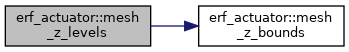
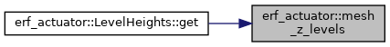
|
inline |
Open a diagnostics text file for writing (the caller writes CSV or space-separated rows), creating its directory. With truncate (a fresh run) the file starts empty; without it (a restarted run) the rows are appended to what the run it continues wrote. Returns whether the caller must write the header: always after truncating, and on append only when the file is new or empty (a restart in a clean directory).
Referenced by erf_actuator::RunningStats::write(), erf_actuator::WakeLines::write_average(), and erf_actuator::WakeLines::write_instantaneous().
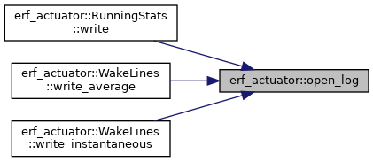
| bool erf_actuator::points_covered_by | ( | const amrex::BoxArray & | ba, |
| const amrex::Geometry & | geom, | ||
| const std::vector< amrex::Real > & | pos, | ||
| amrex::Real | reach, | ||
| std::string & | first_outside, | ||
| CoverZ | z = CoverZ::Reach, |
||
| const ZBounds * | zb = nullptr, |
||
| const ColumnCells * | cells = nullptr |
||
| ) |
| bool erf_actuator::points_covered_by | ( | const BoxArray & | ba, |
| const Geometry & | geom, | ||
| const std::vector< Real > & | pos, | ||
| Real | reach, | ||
| std::string & | first_outside, | ||
| CoverZ | z, | ||
| const ZBounds * | zb, | ||
| const ColumnCells * | cells | ||
| ) |
| bool erf_actuator::points_covered_by | ( | const CoverageGrids & | grids, |
| const amrex::Geometry & | geom, | ||
| const std::vector< amrex::Real > & | pos, | ||
| amrex::Real | reach, | ||
| std::string & | first_outside, | ||
| CoverZ | z = CoverZ::Reach, |
||
| const ZBounds * | zb = nullptr, |
||
| const ColumnCells * | cells = nullptr |
||
| ) |
points_covered_by on boxes built once (CoverageGrids of the same level and geometry).
| bool erf_actuator::points_covered_by | ( | const CoverageGrids & | grids, |
| const Geometry & | geom, | ||
| const std::vector< Real > & | pos, | ||
| Real | reach, | ||
| std::string & | first_outside, | ||
| CoverZ | z, | ||
| const ZBounds * | zb, | ||
| const ColumnCells * | cells | ||
| ) |
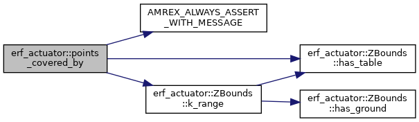
| bool erf_actuator::region_touches_grids | ( | const amrex::BoxArray & | ba, |
| const amrex::Geometry & | geom, | ||
| const amrex::RealBox & | region, | ||
| const ZBounds * | zb = nullptr |
||
| ) |
Whether a level's boxes may hold a cell of a region (lo and hi in metres, lo <= hi in every direction, no NaN): the opposite question to points_covered_by, for a caller that must stay clear of a level. x and y use the cells the region's ends fall in (points_covered_by's own); in a periodic direction every image of the region counts, however many periods away, and a region a period or more long takes every cell. z must not be periodic. A region that overlaps a cell of the level is never missed; one that only meets a cell at a face may not count. In z:
| [in] | ba | the level's boxes (any index type) |
| [in] | geom | the level's geometry |
| [in] | region | the region (m) |
| [in] | zb | the level's table or bounds on a stretched or terrain-following mesh, or nullptr |
| bool erf_actuator::region_touches_grids | ( | const BoxArray & | ba, |
| const Geometry & | geom, | ||
| const RealBox & | region, | ||
| const ZBounds * | zb | ||
| ) |
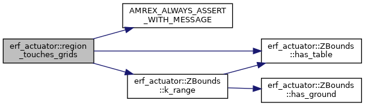
| void erf_actuator::sample_cell_scalar | ( | const amrex::MultiFab & | mf, |
| int | comp, | ||
| const amrex::MultiFab * | z_phys_nd, | ||
| const amrex::Geometry & | geom, | ||
| const std::vector< amrex::Real > & | pos, | ||
| std::vector< amrex::Real > & | val | ||
| ) |
Sample one component of a cell-centred field at a set of points: bilinear between the four cell centres around the point in the horizontal and linear in the physical height between the two cell centres that bracket it in the column (cell-centre heights from z_phys_nd on a stretched or terrain-following mesh); below the first and above the last cell centre the nearest pair extrapolates linearly. Same ownership rules and reduction as sample_velocity(); the field needs one filled ghost cell.
| [in] | mf | the cell-centred field |
| [in] | comp | the component of mf (0-based) |
| [in] | pos | 3*n point coordinates (m, ERF domain coordinates) |
| [out] | val | n sampled values, the same on every rank on return |
| void erf_actuator::sample_cell_scalar | ( | const MultiFab & | mf, |
| int | comp, | ||
| const MultiFab * | z_phys_nd, | ||
| const Geometry & | geom, | ||
| const std::vector< Real > & | pos, | ||
| std::vector< Real > & | val | ||
| ) |
| void erf_actuator::sample_velocity | ( | const amrex::MultiFab & | U, |
| const amrex::MultiFab & | V, | ||
| const amrex::MultiFab & | W, | ||
| const amrex::MultiFab * | z_phys_nd, | ||
| const amrex::Geometry & | geom, | ||
| const std::vector< amrex::Real > & | pos, | ||
| std::vector< amrex::Real > & | vel | ||
| ) |
Sample the velocity at a set of points from the face-centred velocity fields.
Each component is interpolated trilinearly from its own staggered grid: u from the x faces, v from the y faces, w from the z faces, so a field linear in x, y and z is reproduced exactly. The vertical weight uses the physical face heights (z_phys_nd on a stretched or terrain-following mesh, prob_lo + k dz otherwise), so the same holds on those meshes as long as the field is linear in the physical height.
Every rank interpolates the points whose containing cell lies in one of its valid boxes, reading the neighbours from the ghost cells, and the results are summed across ranks; the velocity fields must therefore have at least one filled ghost cell, and z_phys_nd one ghost node, on the velocities' boxes and distribution. The ghost cells across the domain's lateral boundaries are read too (a point within half a cell of a non-periodic face takes up to half its value from them), so the fields must be filled there as well (FillPatch, not only FillBoundary). In a periodic direction a point is moved by whole periods into the domain; a point on the domain's upper x, y or z face belongs to the last cell. A point outside the domain otherwise, or one found by no rank or by more than one, aborts with its coordinates: the caller owns the points and must keep them inside the domain. Every rank must pass the same points: the reduction is collective and the call stops when the ranks disagree on their number. A model whose ranks hold different points (those of the bodies each owns) calls sample_velocity_local() instead, which has no such check.
| [in] | U,V,W | face-centred velocities on one level, ghost cells filled (m/s) |
| [in] | z_phys_nd | nodal physical heights (m), or nullptr on a uniform-dz mesh |
| [in] | geom | the level's geometry |
| [in] | pos | 3*n point coordinates (x0,y0,z0, x1,y1,z1, ...) (m, ERF domain coordinates) |
| [out] | vel | 3*n sampled velocities (m/s), the same on every rank on return |
| void erf_actuator::sample_velocity | ( | const MultiFab & | U, |
| const MultiFab & | V, | ||
| const MultiFab & | W, | ||
| const MultiFab * | z_phys_nd, | ||
| const Geometry & | geom, | ||
| const std::vector< Real > & | pos, | ||
| std::vector< Real > & | vel | ||
| ) |
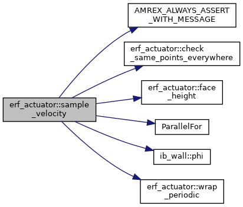
| void erf_actuator::sample_velocity_local | ( | const amrex::MultiFab & | U, |
| const amrex::MultiFab & | V, | ||
| const amrex::MultiFab & | W, | ||
| const amrex::MultiFab * | z_phys_nd, | ||
| const amrex::Geometry & | geom, | ||
| const std::vector< amrex::Real > & | wpos, | ||
| std::vector< amrex::Real > & | vel, | ||
| std::vector< int > & | cnt, | ||
| ActuatorDeviceBuffers * | buffers = nullptr |
||
| ) |
The part of sample_velocity() that a rank does on its own: the velocity at each of the points that one of this rank's boxes holds (cnt 1), zero with cnt 0 at the others. No reduction and no check: the caller combines the ranks' answers. The points must already be moved into the domain across its periodic seams (wrap_periodic).
| [in] | wpos | 3*n point coordinates inside the domain (m) |
| [out] | vel | 3*n velocities (m/s), zero at the points no box of this rank holds |
| [out] | cnt | n counts: how many of this rank's boxes hold each point (0 or 1) |
| buffers | device memory kept from call to call (the call uses its own when nullptr); the points go to the device and the answers come back with asynchronous copies and one synchronisation |
| void erf_actuator::sample_velocity_local | ( | const MultiFab & | U, |
| const MultiFab & | V, | ||
| const MultiFab & | W, | ||
| const MultiFab * | z_phys_nd, | ||
| const Geometry & | geom, | ||
| const std::vector< Real > & | wpos, | ||
| std::vector< Real > & | vel, | ||
| std::vector< int > & | cnt, | ||
| ActuatorDeviceBuffers * | buffers | ||
| ) |
Referenced by sample_velocity().
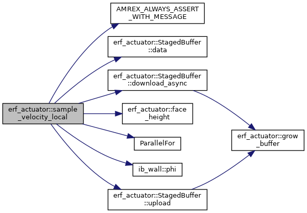
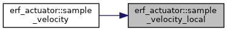
| void erf_actuator::spread_forces | ( | const std::vector< amrex::Real > & | pos, |
| const std::vector< amrex::Real > & | force, | ||
| amrex::Real | epsilon, | ||
| const amrex::MultiFab * | z_phys_nd, | ||
| const amrex::MultiFab * | detJ_cc, | ||
| const amrex::Geometry & | geom, | ||
| amrex::MultiFab & | src_x, | ||
| amrex::MultiFab & | src_y, | ||
| amrex::MultiFab & | src_z | ||
| ) |
The same with one kernel width epsilon (m, > 0 and finite) for every point.
| void erf_actuator::spread_forces | ( | const std::vector< amrex::Real > & | pos, |
| const std::vector< amrex::Real > & | force, | ||
| const std::vector< amrex::Real > & | epsilon, | ||
| const amrex::MultiFab * | z_phys_nd, | ||
| const amrex::MultiFab * | detJ_cc, | ||
| const amrex::Geometry & | geom, | ||
| amrex::MultiFab & | src_x, | ||
| amrex::MultiFab & | src_y, | ||
| amrex::MultiFab & | src_z | ||
| ) |
Spread point forces onto the face-centred momentum sources with a 3-D Gaussian kernel.
The points are spread where they are given, with the periodic images within reach of the domain: a caller whose points may lie outside a periodic domain moves them inside first (wrap_periodic()).
Each point p carries a force F_p on the fluid (N) and has its own kernel width epsilon_p (the conductor lines and the towers of a run may differ). Its share of the source at a face is F_p w_p(face) / S_p, where w_p = exp(-|x_face - x_p|^2 / epsilon_p^2) is cut off beyond 3 epsilon_p and S_p = sum over the faces of that component of w_p dV is the discrete normalisation with the face volumes (dx dy dz detJ on a terrain-following mesh). The sum of src dV over the mesh therefore equals F_p exactly for every point and component, whatever the resolution and however much of the kernel is cut off by the ground or the domain top; the kernel's shape is Gaussian only where it is resolved. The faces sit at prob_lo + i dx with the volumes dx dy dz detJ, with no map factors: a body model must refuse a run whose map factors are not 1 until the core carries them. The normalisation sums and the sources are accumulated in a fixed order without atomic adds (spread_partial_norms(), add_scaled_kernels()), so the source does not depend on the device's scheduling.
Every rank accumulates the faces its boxes own (each physical face once, however the boxes share their boundary faces) and the normalisations are summed across ranks, so the result does not depend on the domain decomposition; every rank must pass the same points. Every periodic image of a point within 3 epsilon_p of the domain (in x and y; z is not imaged) adds its kernel, so a kernel wraps across a periodic boundary, and overlaps itself when the period is under 6 epsilon_p. The sources are set (not added to) on every valid face, both copies of a shared face alike; the faces on a non-periodic domain boundary get no source.
Aborts when a position or force is not finite. z_phys_nd and detJ_cc must share the boxes and distribution of src_x; src_x, src_y and src_z are face-centred in x, y and z.
| [in] | pos | 3*n point coordinates (m, ERF domain coordinates) |
| [in] | force | 3*n forces ON the fluid BY the body (N, ERF frame): minus the fluid's force on the body |
| [in] | epsilon | n kernel widths, one per point (m, > 0 and finite) |
| [in] | z_phys_nd | nodal heights (m), or nullptr on a uniform-dz mesh |
| [in] | detJ_cc | cell Jacobians (1 ghost cell), or nullptr on a uniform-dz mesh |
| [in] | geom | the level's geometry |
| [out] | src_x,src_y,src_z | face-centred momentum sources (N/m^3), one component each |
| void erf_actuator::spread_forces | ( | const std::vector< Real > & | pos, |
| const std::vector< Real > & | force, | ||
| const std::vector< Real > & | epsilon, | ||
| const MultiFab * | z_phys_nd, | ||
| const MultiFab * | detJ_cc, | ||
| const Geometry & | geom, | ||
| MultiFab & | src_x, | ||
| MultiFab & | src_y, | ||
| MultiFab & | src_z | ||
| ) |
Referenced by spread_forces().
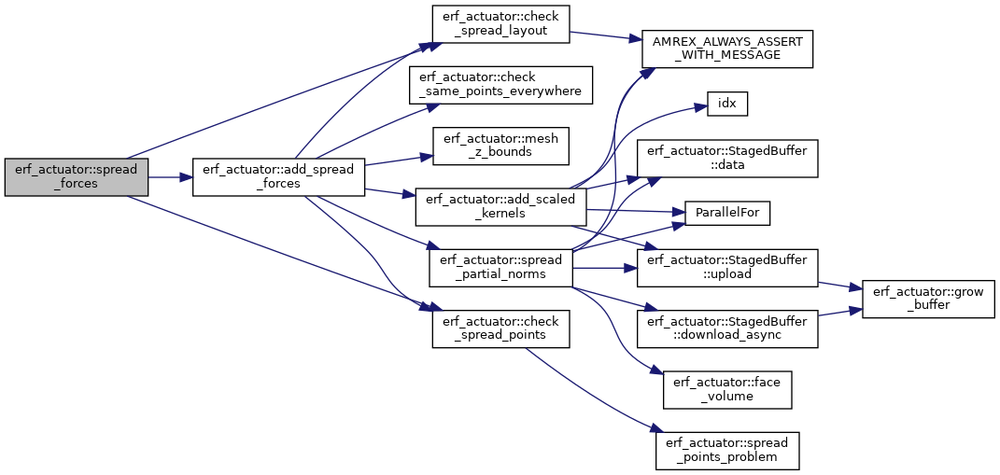
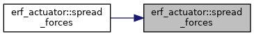
| void erf_actuator::spread_forces | ( | const std::vector< Real > & | pos, |
| const std::vector< Real > & | force, | ||
| Real | epsilon, | ||
| const MultiFab * | z_phys_nd, | ||
| const MultiFab * | detJ_cc, | ||
| const Geometry & | geom, | ||
| MultiFab & | src_x, | ||
| MultiFab & | src_y, | ||
| MultiFab & | src_z | ||
| ) |
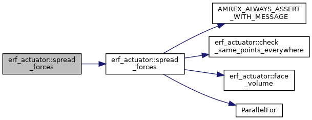
| void erf_actuator::spread_partial_norms | ( | const std::vector< amrex::Real > & | pos, |
| const std::vector< amrex::Real > & | epsilon, | ||
| const amrex::MultiFab * | z_phys_nd, | ||
| const amrex::MultiFab * | detJ_cc, | ||
| const amrex::Geometry & | geom, | ||
| const amrex::MultiFab & | src_x, | ||
| std::vector< amrex::Real > & | norm, | ||
| const ZBounds * | zb_local = nullptr, |
||
| ActuatorDeviceBuffers * | buffers = nullptr |
||
| ) |
The first of spread_forces()'s two passes, on this rank's boxes only: for each point and each component, this rank's part of the normalisation S_p (the sum of w_p dV over the faces its boxes own). No reduction: the caller sums the ranks' parts (spread_forces() over every rank; a model whose ranks hold different points, over the ranks a point reaches). The boxes are src_x's, which z_phys_nd and detJ_cc must share. zb_local, when given, is this rank's mesh_z_bounds(z_phys_nd, geom, false), which the call then need not compute; the same for add_scaled_kernels.
The periodic images of the points are made once, and binned to the boxes: one kernel per box and face grid, one thread per point, which adds the point's terms in a fixed order (its images, then their faces k, j, i) without atomics, so the result does not depend on the device's scheduling. The call checks only the arrays' sizes: the caller checks the points, widths and layouts first (check_spread_points(), check_spread_layout()), as spread_forces() does; the same for add_scaled_kernels().
| [out] | norm | 3*n partial normalisations (m^3), component fastest |
| buffers | device memory kept from call to call (the call uses its own when nullptr) |
| void erf_actuator::spread_partial_norms | ( | const std::vector< Real > & | pos, |
| const std::vector< Real > & | epsilon, | ||
| const MultiFab * | z_phys_nd, | ||
| const MultiFab * | detJ_cc, | ||
| const Geometry & | geom, | ||
| const MultiFab & | src_x, | ||
| std::vector< Real > & | norm, | ||
| const ZBounds * | zb_local, | ||
| ActuatorDeviceBuffers * | buffers | ||
| ) |
Referenced by add_spread_forces().
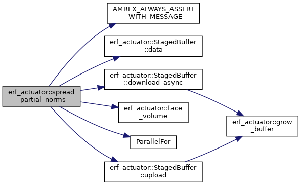
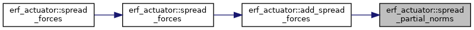
| std::string erf_actuator::spread_points_problem | ( | const std::vector< amrex::Real > & | pos, |
| const std::vector< amrex::Real > & | force, | ||
| const std::vector< amrex::Real > & | epsilon | ||
| ) |
What is wrong with the points, forces and widths for spread_forces (an empty string when nothing is).
Referenced by check_spread_points().
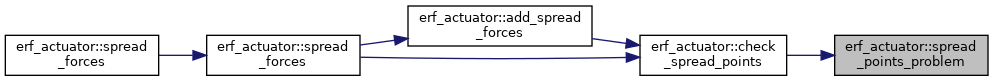
| void erf_actuator::terrain_heights | ( | const amrex::MultiFab * | z_phys_nd, |
| const amrex::Geometry & | geom, | ||
| const std::vector< amrex::Real > & | pos, | ||
| std::vector< amrex::Real > & | h | ||
| ) |
Return the height of the terrain surface (the k = 0 node plane of z_phys_nd, bilinear between the four mesh nodes around each point's (x, y)) under a set of points; prob_lo z everywhere on a uniform-dz mesh (z_phys_nd null), where no point is checked. Otherwise the same ownership rules, periodic images and reduction as sample_velocity(): the points must lie inside the domain horizontally, a point on the domain's upper x or y face belonging to the last cell; z is ignored.
| [in] | pos | 3*n positions (m) |
| [out] | h | n terrain heights (m), the same on every rank on return |
| void erf_actuator::terrain_heights | ( | const MultiFab * | z_phys_nd, |
| const Geometry & | geom, | ||
| const std::vector< Real > & | pos, | ||
| std::vector< Real > & | h | ||
| ) |
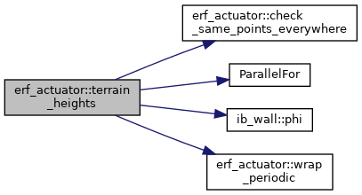
| std::vector<amrex::Real> erf_actuator::wrap_periodic | ( | const std::vector< amrex::Real > & | pos, |
| const amrex::Geometry & | geom | ||
| ) |
The points (3 coordinates each, m) with their coordinates in every periodic direction moved by whole periods into [prob_lo, prob_hi): the image the boxes hold, so that a point that has crossed a periodic seam is sampled on the far side.
| std::vector<Real> erf_actuator::wrap_periodic | ( | const std::vector< Real > & | pos, |
| const Geometry & | geom | ||
| ) |
Referenced by sample_cell_scalar(), sample_velocity(), and terrain_heights().
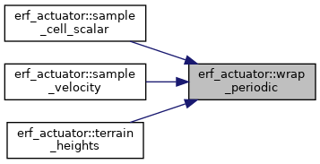